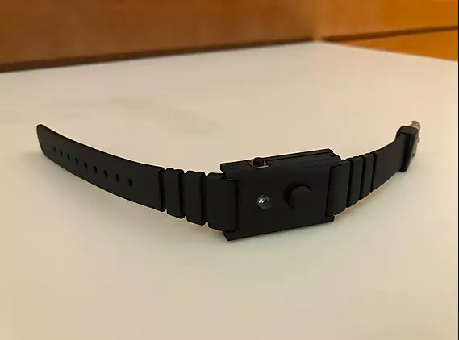
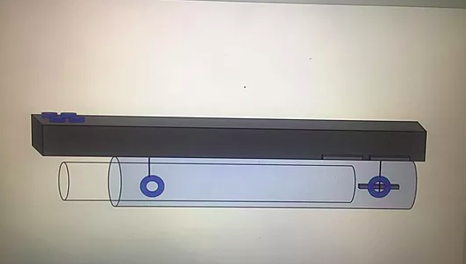

Reverb
A wearable device to prevent progressive hearing loss.
This wearable device is to be worn on the user's wrist. It contains a modular attachment that would be placed in the user's headphones. Through bluetooth, the module containing the sound sensor would send information through bluetooth to the wristband and would notify the user through vibration if the decibel volume becomes greater than the safe range.
Tools used: Python, Raspberry Pi, Circuit design, Biomedical design principles.
TeleArm
A wheelchair attachment to improve accessibility issues.
This project was made for a quadriplegic client who wanted an easier way to access accessibility buttons around campus due to limited arm and hand mobility. My group decided to design a wheelchair attachment that can be controlled using fine finger skills. This attachment would be a telescoping arm that would be extended and retracted mechanically.
Tools used: Python, Raspberry Pi, Circuit design, Biomedical design principles.
The Fling
An attachment to secure and verify ostomy coupling.
This project is comprised of two parts: a magnetic 3D printed component and a circuit component. When the two magnets of the 3D printed component are together, an electric current flows through the circuit. This turns on a light bulb for the user to know that the ostomy flange is properly secured.
Tools used: AutoCAD, 3D Printing, Circuit design.

The Wing-Tabulum
An engineered hip implant.
This project was made specifically for a client that suffered from Legg-Calve-Perthes disease. This disease result in the flattenning of the acetabulum and as a result, would need a modified hip implant. We were also responsible for selecting the material as well as the structure of the design as seen in the image below.
Tools used: AutoCAD, 3D Printing, Automated material testing (Python).